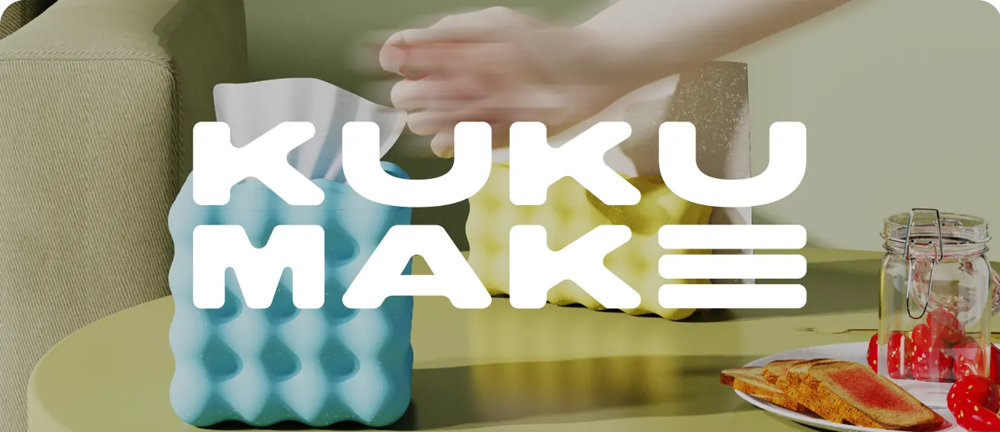
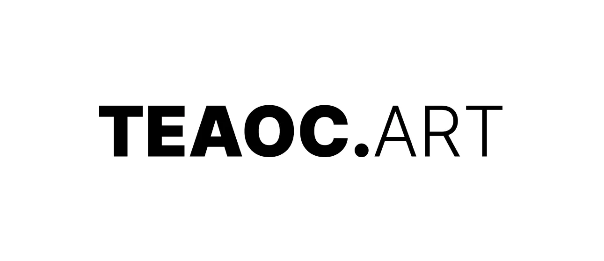
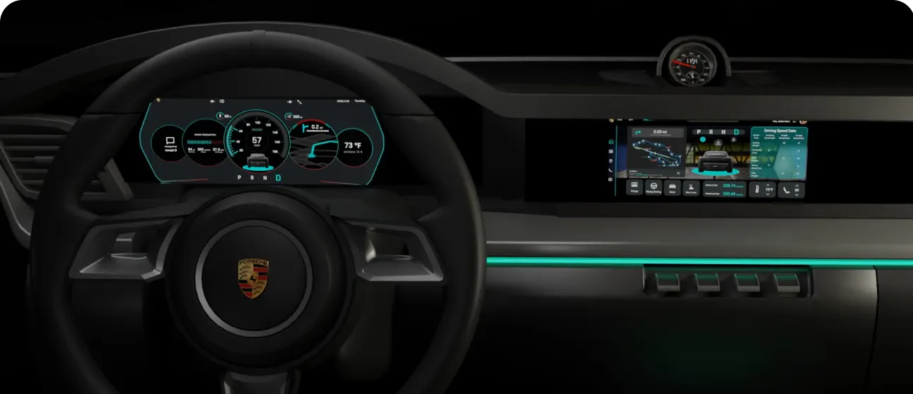
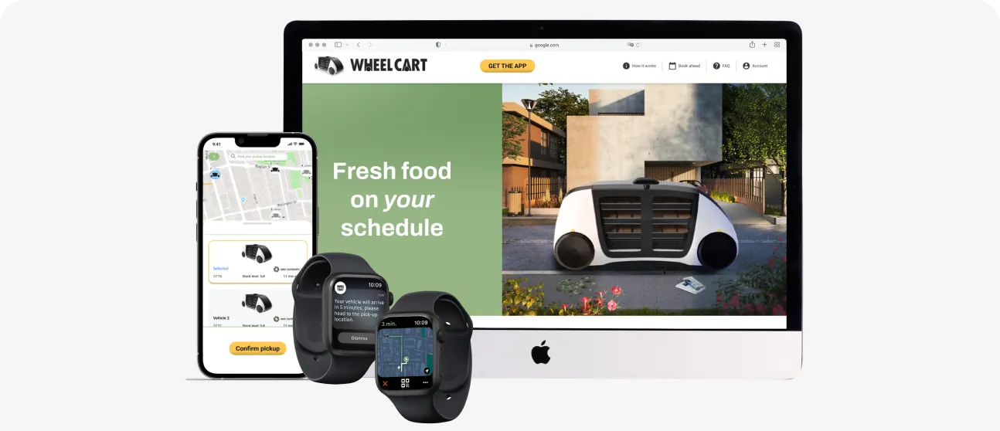
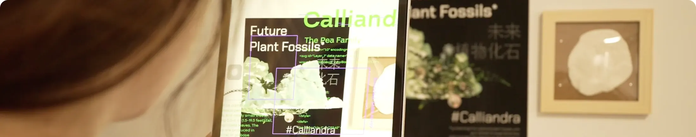
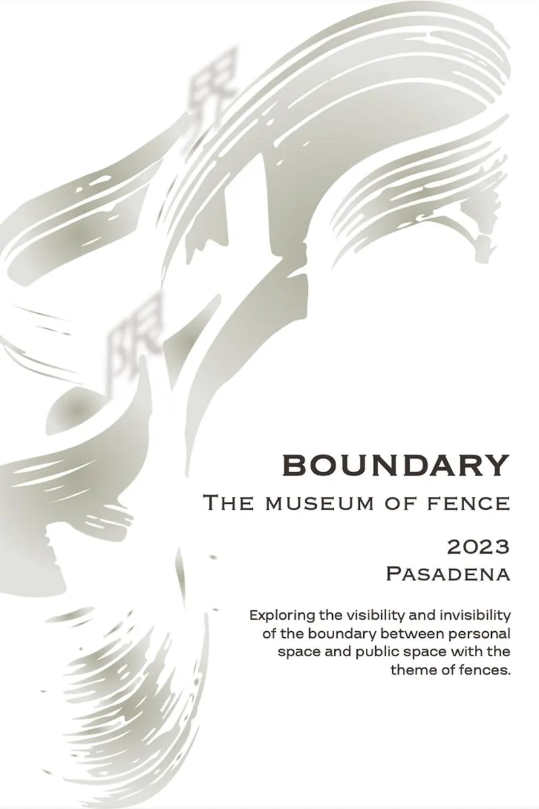
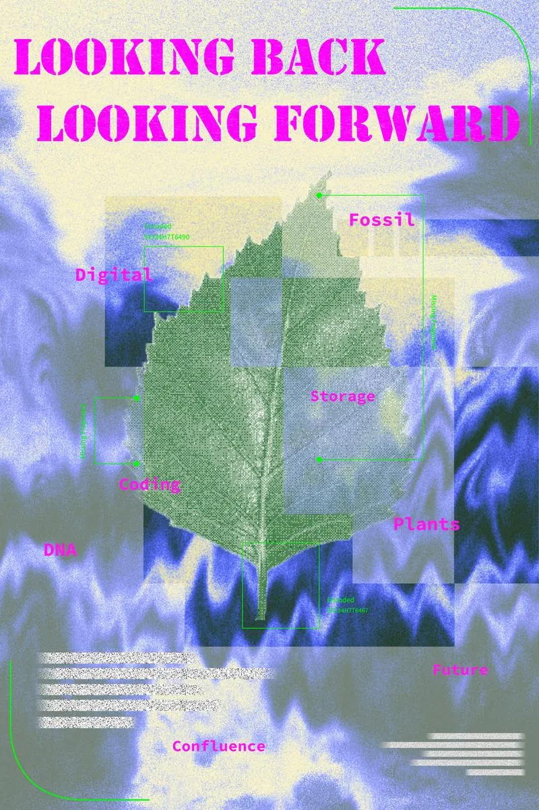
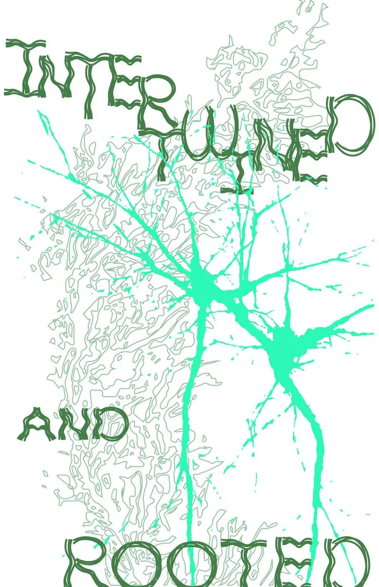
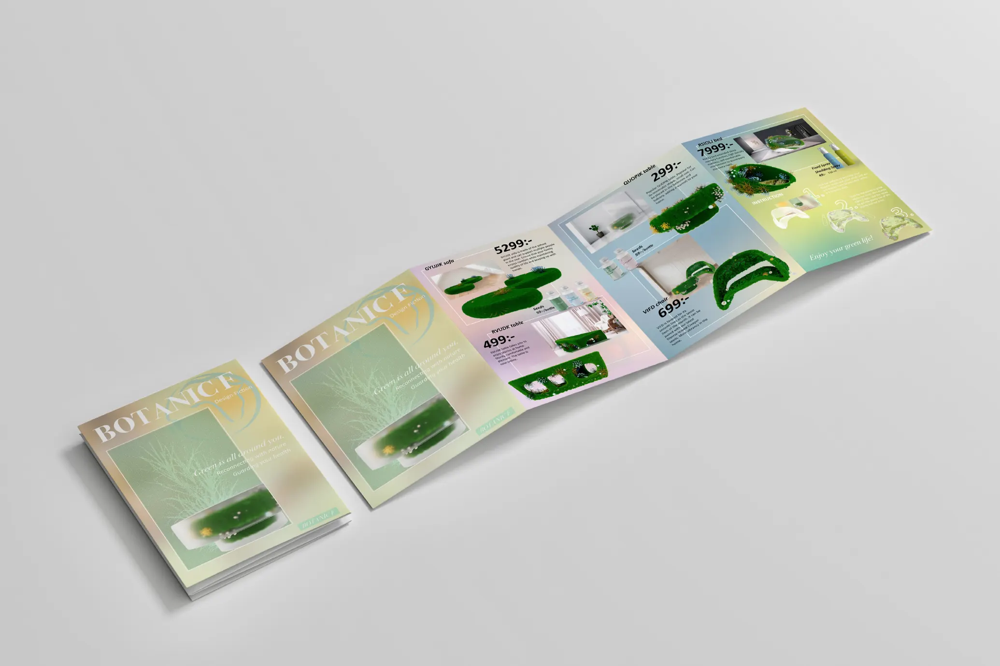

ArtCenter
College of Design
MFA, Media Design Practices
2023–2025 GPA: 3.8/4.0Branding Design
Graphic Design
UI Design
Based in Hangzhou
Efficient communicator with a responsive and
collaborative approach, committed to creating
long-term value for clients.
I am a Brand Designer, a Graphic Designer and a UI Designer with a curious and critical thinking, blending interaction design, research, and cultural imagination to create human‑centered digital experiences.
Led end-to-end brand design, from positioning and visual identity
to website design and digital assets.
Combines UI design and user research to create visually
engaging, user-centered digital experiences.
Hands-on experience across both the U.S. and Chinese markets, with strong
adaptability to remote collaboration and fast-paced communication.
MFA, Media Design Practices
2023–2025 GPA: 3.8/4.0BA, Digital Culture, Design
2019–2022 Double MajorResponsible for developing cohesive brand identities, including brand
positioning, logo design, color systems, and website design, ensuring
consistency and recognition across all brand touchpoints.
Maintained and enhanced TEAOC.ART’s website through UI/UX design, visual asset
optimization, and content updates, while creating social media graphics, event banners,
email layouts, and other digital assets to ensure a cohesive and engaging brand
experience across platforms.
Created digital and motion assets, contributed to interface and brand design for new product launches, and supported daily shoots and creative video production to ensure a cohesive brand experience across platforms.
Designed VIP digital promotional materials, contributed to the editing, proofreading, typesetting, and print production of the UCCA Annual Report, and supported the UCCA × Louis Vuitton Cindy Sherman: On Stage exhibition and VIP events through visual presentation, on-site coordination, and cross-functional collaboration.

Branding StrategyBranding DesignWebsite Design

Website DesignMedia DesignMarketing Design

UI/UX DesignAutomotive Design

UI/UX DesignSpeculative Design

AR InstallationDigital MediaGraphic Design



